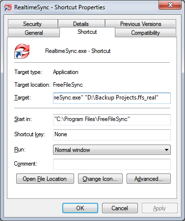

RealtimeSync should be monitoring while a user is logged in:
Create a new shortcut, enter the command line from above as target and place it into the user's autostart folder.


RealtimeSync should be monitoring while Windows is running irrespective of currently logged in users:
Create a new task in your operating systems's task scheduler and have it execute the command line above
when the system starts. See Schedule a Batch Job for an example how to add a task. Then change
the user which runs the task to SYSTEM - a special user account always running in the background.